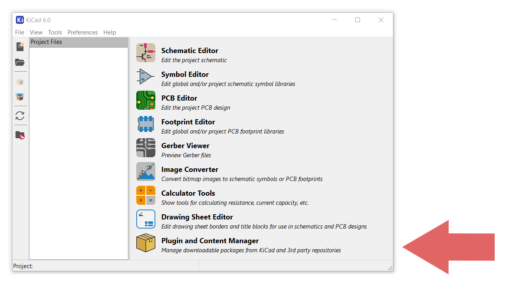
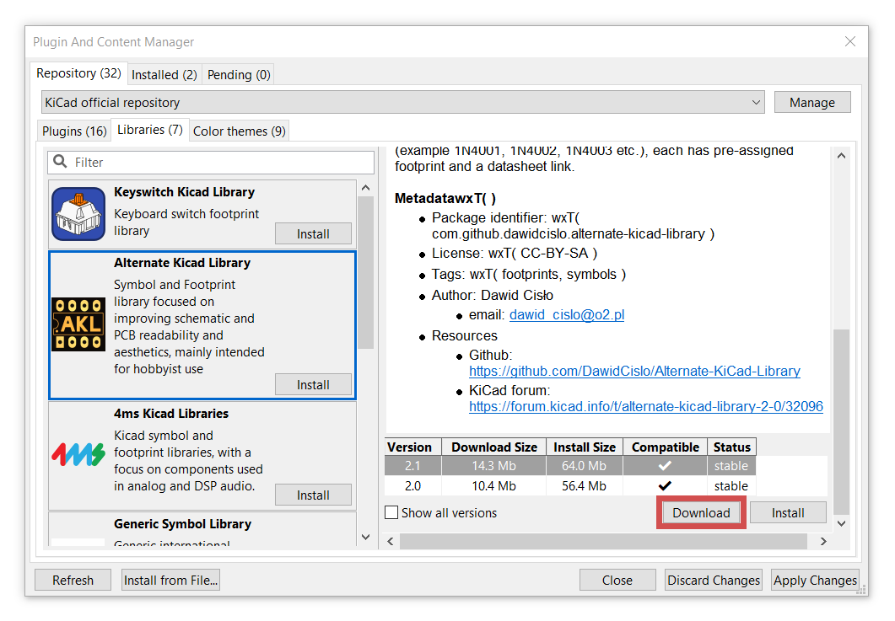
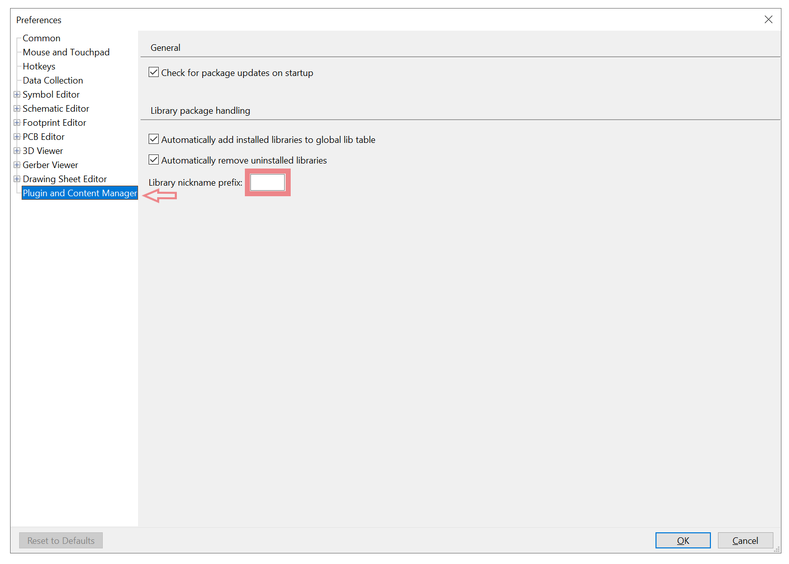
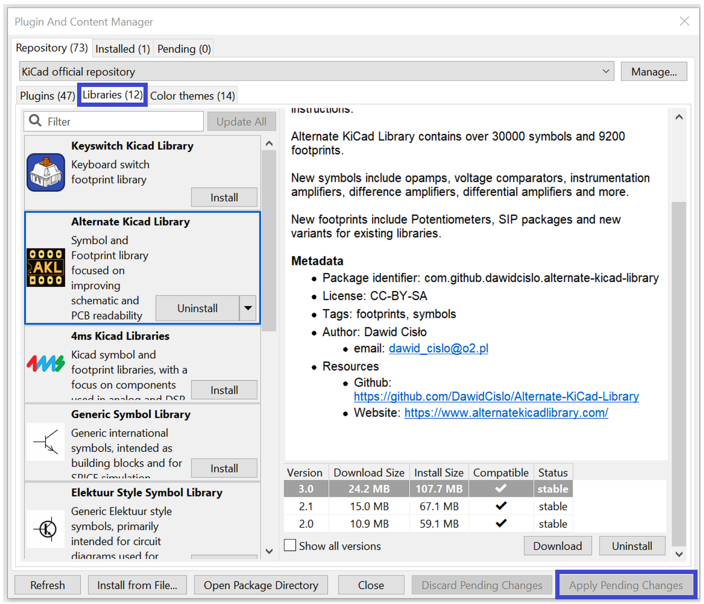
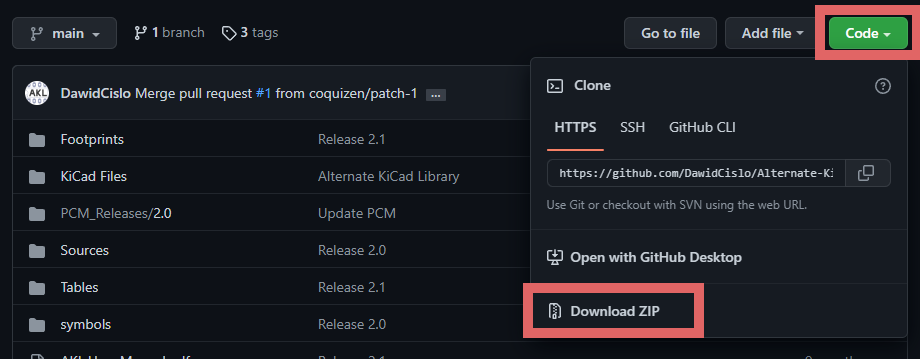
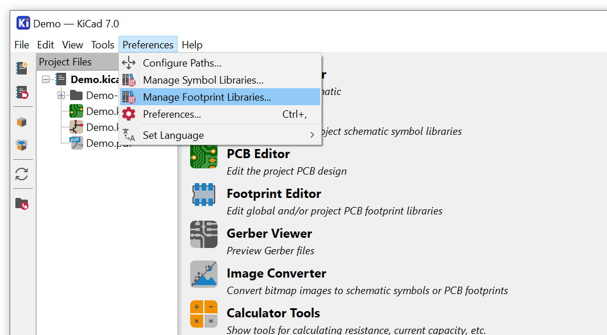
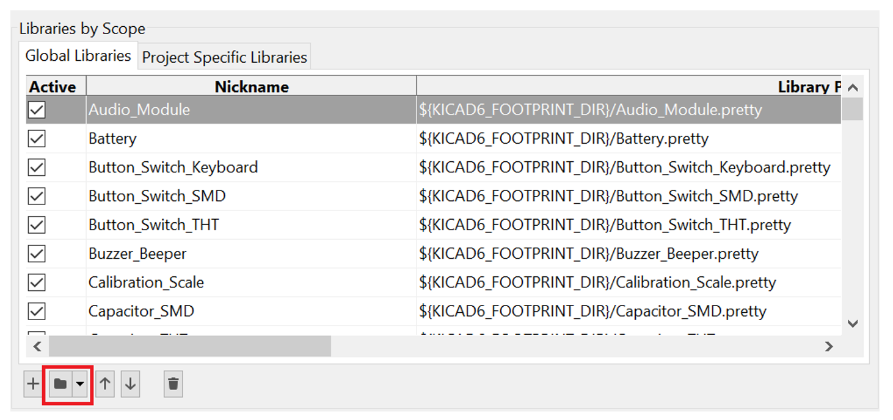
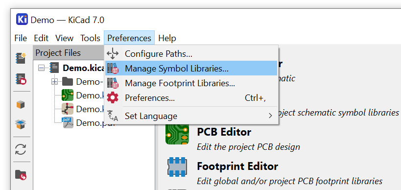
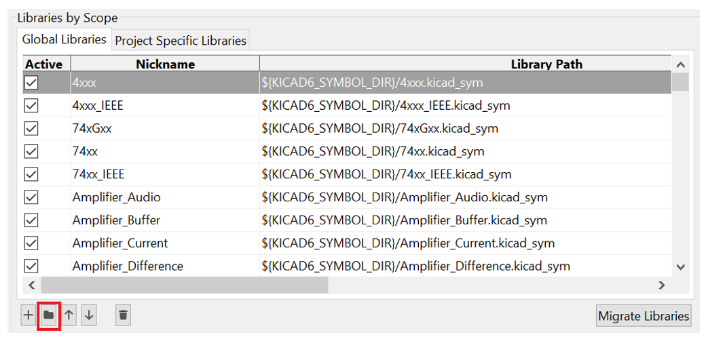

Installation via PCM
KiCad offers a built-in package and content manager that can be used to easily download and manage third-party plugins, themes and libraries.

You can find the Plugin and Content Manager at the bottom of KiCad's home screen.
KiCad 8 automatically installs the downloaded libraries and adds a 'PCM_' prefix to the name of each library. Normally this would break symbol-footprint association but the standard 4.0.1 package is built to handle that so no further action is necessary

If you want to remove the automatic 'PCM_' prefixes, you can do that in Preferences -> Packages and Updates. Simply leave the field 'Library nickname prefix' blank.

Now go back to the PCM and select a 4.0 release instead - this package expects library names to have no 'PCM_' prefix and will work correctly.
After you selected the appropriate version press 'Download' and 'Apply Pending Changes'

All of the installed libraries should now be accesible.
Manual installation
Manual installation can be performed on all KiCad versions.
Go to the Github Repository and download the library files by pressing the green Code button and selecting the Download ZIP option.

Extract the downloaded files to any location you want.
KiCad uses library tables to keep track of libraries and their location. To make the library accesible by KiCad you need to add new libraries to these tables manually.
Go to Manage Footprint Libraries in the Preferences tab.

Press the folder icon at the bottom of the window and locate the folder with the extracted library files.

Footprint libraries are contained in the folder 'Footprints' and each of them is a folder with the name ending in '.pretty'.
Highlight all the libraries that you want to install and press Select Folder.
Next, go to Manage Symbol Libraries in the Preferences tab.

Press the folder icon at the bottom of the window and locate the 'symbols' folder within the extracted library files.

It should contain multiple files with '.kicad_sym' extensions. Each of them is a separate symbol library. Select all the libraries that you want to install and press Open.
All the installed libraries should now be accesible.